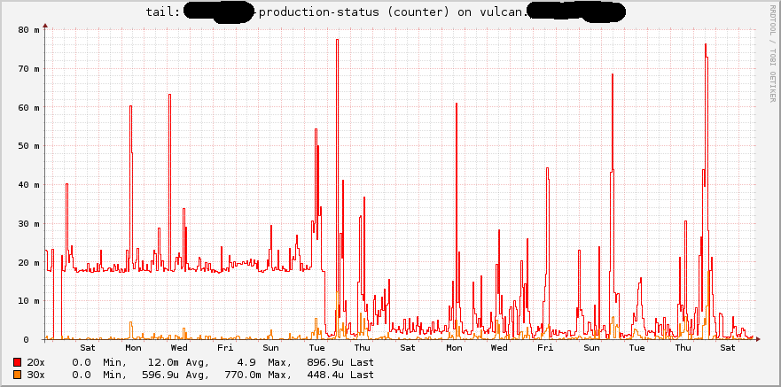

This is a showoff presentation.
use the arrow keys to navigate or press ? for help
The Talk has been given on August 18th 2013
at eurucamp 2013.
- The events described here are not fictional.
- Logfiles, monitoring and live apps were hurt during the events.
Most participants survived this and are now in good health again.
One bug got squashed.
This is the last slide I will read completely.
Matthias Viehweger
- ruby developer in operations

technical and social aspects of
The only good Bug is a dead Bug!
Buenos Aires Resident
Starship Troopers
There are situations in which you need to know more about an error.
possible error types
- inconsistent data
- erratic failures
If you are in the blame-game :)
possible error sources
- user input
- external APIs
One of the standard tools in such situations is logging. With the presence of the production.log it is tempting to just pour messages in there.
production.log
- logger.info
Next, you want more information and think about raising the loglevel.
raising the log level
config.log_level = :infoconfig.log_level = :debug
Advise: DO NOT RAISE THE LOGLEVEL. I advise not to raise the loglevel for the whole application in this case. Actually, I cannot think of a good reason to make it more verbose than is is right now.
- Do not
- raise
- the loglevel
A look at the logs
rails tells us a story
$ cd rails3-app && tail log/development.log
Processing ArticlesController#index (for 127.0.0.1 at 2013-07-09 10:30:13) [GET]
Started GET "/" for 127.0.0.1 at 2013-07-11 00:01:14 +0200
Processing by HomeController#home as HTML
Article Load (0.3ms) SELECT "articles".* FROM "articles" LIMIT 1
Article Load (0.3ms) SELECT "articles".* FROM "articles" ORDER BY position ASC
Rendered home/home.html.haml within layouts/default (20.7ms)
Rendered application/_flash.html.haml (0.1ms)
CACHE (0.0ms) SELECT "articles".* FROM "articles" ORDER BY position ASC
Rendered search/_search_box.html.haml (6.6ms)
Rendered layouts/_navigation.html.haml (1.0ms)
Rendered application/_footer.html.haml (3.5ms)
Completed 200 OK in 58ms (Views: 51.8ms | ActiveRecord: 2.4ms)
$ whatis development.log
development.log (5) - verbose logging in prose
suitable for understanding the flow
rails tells us a story
Processing ArticlesController#index (for 127.0.0.1 at 2013-07-09 10:30:13) [GET]
Started GET "/" for 127.0.0.1 at 2013-07-11 00:01:14 +0200
Processing by HomeController#home as HTML
Article Load (0.3ms) SELECT "articles".* FROM "articles" LIMIT 1
Article Load (0.3ms) SELECT "articles".* FROM "articles" ORDER BY position ASC
Rendered home/home.html.haml within layouts/default (20.7ms)
Rendered application/_flash.html.haml (0.1ms)
CACHE (0.0ms) SELECT "articles".* FROM "articles" ORDER BY position ASC
Rendered search/_search_box.html.haml (6.6ms)
Rendered layouts/_navigation.html.haml (1.0ms)
Rendered application/_footer.html.haml (3.5ms)
Completed 200 OK in 58ms (Views: 51.8ms | ActiveRecord: 2.4ms)
rails tells us a story
Processing ArticlesController#index (for 127.0.0.1 at 2013-07-09 10:30:13) [GET]
Started GET "/" for 127.0.0.1 at 2013-07-11 00:01:14 +0200
Processing by HomeController#home as HTML
Article Load (0.3ms) SELECT "articles".* FROM "articles" LIMIT 1
Article Load (0.3ms) SELECT "articles".* FROM "articles" ORDER BY position ASC
Rendered home/home.html.haml within layouts/default (20.7ms)
Rendered application/_flash.html.haml (0.1ms)
CACHE (0.0ms) SELECT "articles".* FROM "articles" ORDER BY position ASC
Rendered search/_search_box.html.haml (6.6ms)
Rendered layouts/_navigation.html.haml (1.0ms)
Rendered application/_footer.html.haml (3.5ms)
Completed 200 OK in 58ms (Views: 51.8ms | ActiveRecord: 2.4ms)
we want just the information
$ tail -n 1 log/production.log
[2013-07-11 11:48:20 +0200] method=GET path=/ format=*/*
controller=home action=home status=200
duration=784.89 view=558.99 db=219.42
$ whatis production.log
production.log (5) - concise logging, suitable
for further processing
$ grep log_level config/environments/production.rb -C 1
# do not change the loglevel as monitoring depends on this format
config.log_level = :info
config.lograge.enabled = true
the road so far
- bughunting might involve logging
- each log has a different purpose
- rails' standard log is telling a story
- on production concise info is enough
Why the log should I hell?
Logfiles provide insight
- we hope
checking raw logs
This image is protected by copyright. All rights to this image are located at Village Roadshow Pictures and/or Warner Bros. Entertainment, and any subsidiary or third party companies. It is used as a picture quotation according to § 51 UrhG (Urhebergesetz, German Copyright Act) solely for substantive explanation. The image must not be altered. Picture quotations may only be used in direct connection. A correct and accurate source of information is essential.
visualize the log
with tools like munin and collectd
visualize

When did the monitoring on this machine change?
visualize crazily
What could possibly go wrong?
everything the system does for you,
the system also does to you
Leaver's Law OR David Brady
IO takes time
- we had an increase of 200 - 2500 ms
- if you were amazon, you would die with such numbers
- Joe Developer and Sam Salesperson don't like that
Monitoring breaks
- because the format changed
- Jane Ops and Kim DevOps don't like that
Diskusage increases
- logs can grow really big
- even with log-rotation
- every partition has limits
- again, Ops-people don't like that
What else?
- of course, we never forget such a thing
- unless we do
- and then discover it 2 years later
- personally, I don't like that
Bug squashing
- we raised the loglevel
- we spent time, sweat and tears
- we eventually found it
- the bad way
specialised logging
Own Logger
log = Logger.new( filename )log.info "F1rst L0g"log.info "All your logz are belong to us."
With the notification API that has been introduced with Rails 3, one can listen the the right events and write stuff to a file.
Instrumentation API
- exists since Rails3
- subscribe to events
- react as you want
events
start_processing.action_controllerprocess_action.action_controllersql.active_record- create your own
Code example, to be put in an initializer:
class PaymentLogger < Logger
def format_message(severity, timestamp, progname, msg)
"#{timestamp.to_formatted_s(:db)} #{severity} #{msg}\n"
end
endCode example, to be put in an initializer:
class PaymentLogger < Logger
def format_message(severity, timestamp, progname, msg)
"#{timestamp.to_formatted_s(:db)} #{severity} #{msg}\n"
end
end
logfile = Rails.root.join('log').
join(Rails.env + '.payment.log')
pay_log = PaymentLogger.new(File.open(logfile.to_s, 'a'))Code example, to be put in an initializer:
class PaymentLogger < Logger
def format_message(severity, timestamp, progname, msg)
"#{timestamp.to_formatted_s(:db)} #{severity} #{msg}\n"
end
end
logfile = Rails.root.join('log').
join(Rails.env + '.payment.log')
pay_log = PaymentLogger.new(File.open(logfile.to_s, 'a'))
ActiveSupport::Notifications.subscribe(
'sql.active_record'
) do |name, start, finish, id, payload|
payment_logger.info payload[:sql]
endSo: put your carefully crafted log in a dedicated logfile and do not upset your team. With a little luck and a friendly word, you might even get a special graph by the ops-folks from you log so you can visually debug and detect recurring patterns.
Specialise
- dedicate a logfile
- log your business domain
- graph the results
thanks
Questions?
- Matthias Viehweger
- twitter.com:
@der_kronn - github.com:
kronn